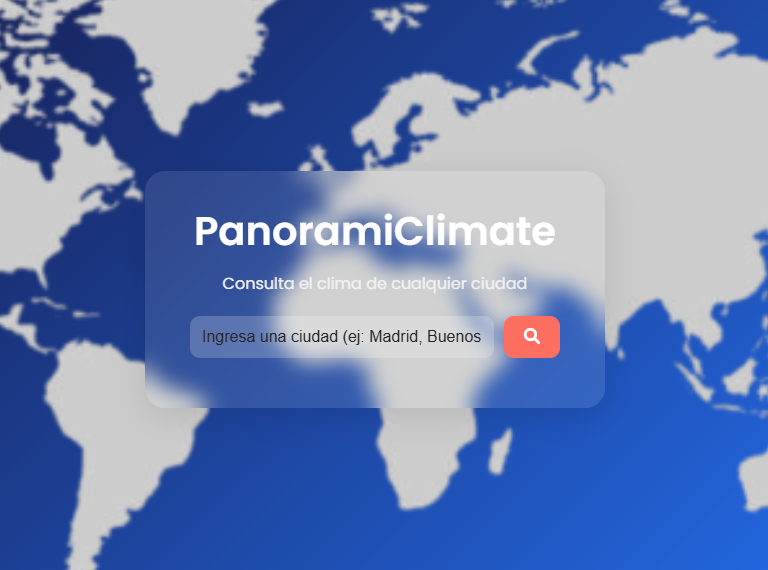
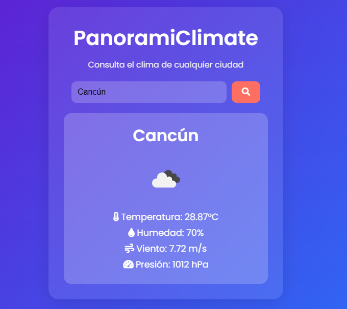
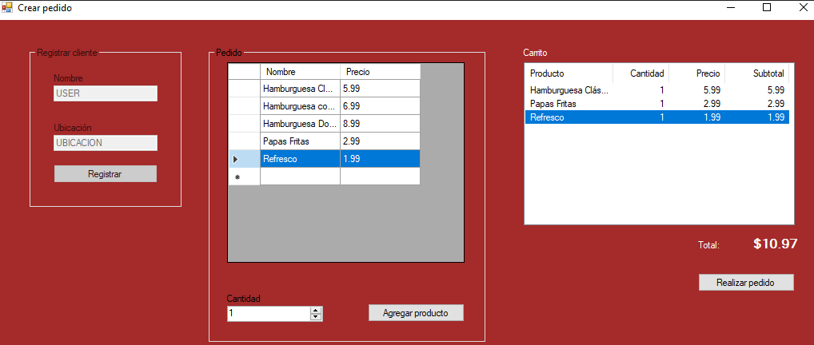
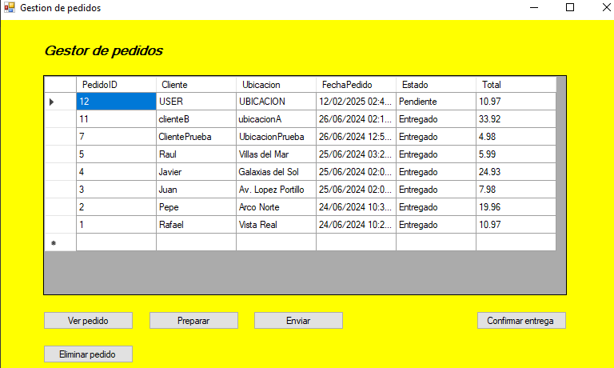
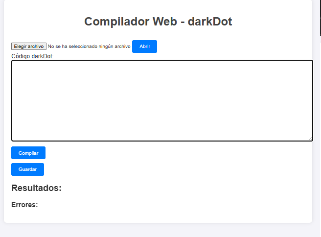
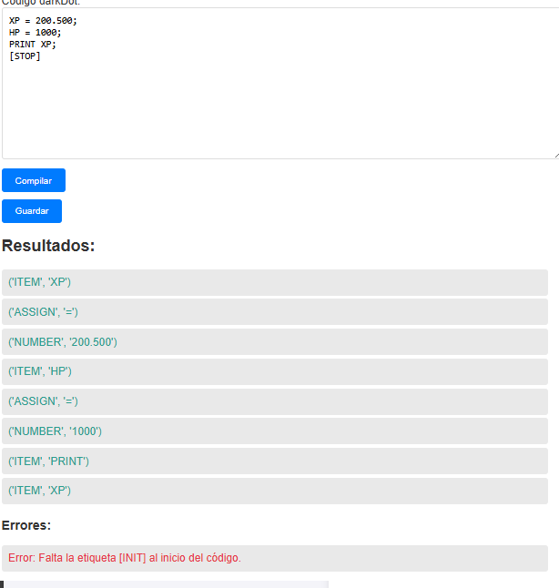

Sobre Mí
Mi nombre es Rafael Enrique Rojas Vilchez, soy estudiante de la UPQROO en la carrera de Ingenieria en Software, actualmente me encuentro cursando el octavo cuatrimestre de la carrera. Tengo experiencia previa en cursar Informatica durante la preparatoria en el Colegio Kukulcan, aprendiendo de lo básico como diseño web mediante HTML, CSS e integración de Bootstrap, desde que entre a la universidad, comence a descubrir cosas como bases de datos (SQL), lenguajes de programación (C#) y un sinfin de herramientas y tecnologias. Este sitio funciona como un pequeño portafolio de proyectos que he hecho a lo largo de mi estancia en la universidad. -- En cuanto a mi persona, me considero como una persona con capacidad creativa cuando se lo propone, con un sentido de responsabilidad, y un gusto por el diseño (gráfico).
Proyectos
Aquí puedes encontrar algunos de mis proyectos más recientes:
- Proyecto 1: Aplicación de clima
- Proyecto 2: Sistema de hamburgueseria
- Proyecto 3: Analizador léxico con lenguaje personalizado
Una aplicación tipo Web desarrollado mediante el uso de HTML y CSS para presentación, JS para la lógica, y el uso de una API Key de OpenWeatherMap para obtener el clima de cualquier ciudad del mundo. - Esto es una demostración de las funciones de un API para recolectar datos. (Por motivos de privacidad, no puedo distribuir mi propia API Key, asi que es mejor que consigan el suyo en el sitio de OpenWeatherMap)
 Dos aplicaciones que funcionan como un simulador de un negocio de hamburguesas: Un creador de pedidos y gestor de pedidos. -- Se desarrollo mediante el uso de Windows Forms para el diseño y logica, tambien se hizo el uso de SQL Management Studio para la base de datos de pedidos que vaya recogiendo el gestor. -- La finalidad es demostrar el uso de una aplicación conectada a una base de datos, recibiendo las consultas y visualizandolas en los Forms. (El proyecto tiene adjuntado su script .SQL para evitar la arduosa tarea de hacer desde cero la base de datos por cada maquina.)
 Este proyecto es un analizador léxico hecho en base a un lenguaje que yo mismo he creado: "darkDot"; lee cada parte de un codigo en dicho lenguaje y obtiene sus respectivos tokens y tambien detecta errores. Utiliza Python (con Flask) en logistica y HTML con CSS para diseño. -- Esto es una demostración del desarrollo de un compilador.
 